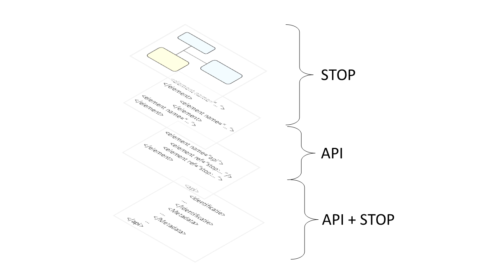

Modulaire structuur
Modules voor gebruik in een API
STOP is opgezet volgens een modulaire structuur.

De informatie die conform STOP uitgewisseld kan worden staat gedocumenteerd in het Informatiemodel Officiële Publicaties. Hierin is ook aangegeven hoe de informatie verdeeld is in modules. Een module is een set van bij elkaar horende informatie die steeds als één geheel uitgewisseld moet worden.
STOP schrijft ook voor hoe de informatie in de modules als XML geserialiseerd moet worden. De XML schema's die de serialisatie beschrijven vormen het normatieve deel van STOP: het is verplicht informatie in deze vorm uit te wisselen. De schema's zijn gedocumenteerd waarbij ook de relatie met het informatiemodel is aangegeven.
STOP schrijft niet voor hoe een STOP-gebruikend systeem de modules moet gebruiken. Voor elk systeem kan een API ontworpen worden die voor de verschillende services een eigen keuze maakt voor de uitwisseling van informatie, zolang die uitwisseling is opgebouwd uit de STOP-modules. Voor een API kan dus wel een keuze gemaakt worden welke modules voor een service aangeleverd of uitgeleverd worden, en hoe meerdere modules in één pakket worden samengebracht. Maar het is niet toegestaan de definitie van een module aan te passen en bijvoorbeeld maar de helft van de informatie in een API op te nemen.
Om de XML samen te stellen die aangeleverd moet worden aan een systeem moet dus in eerste instantie naar de API specificatie gekeken worden, die voor de specificatie van de modules terugvalt op de specificaties van STOP. De XML die bijvoorbeeld de metadata van een besluit beschrijft ziet er dus in elke API hetzelfde uit, maar het is een API-specifieke invulling of die XML in een apart bestand staat, ingebed is in een XML bestand met meer informatie over het besluit, en of dat bestand via HTTPS gedownload wordt of in een ZIP bestand via ebMS verstuurd wordt.
Voor software die gebruik maakt van de standaard betekent dit dat de informatie uit het informatiemodel Officiële Publicaties altijd op dezelfde manier geserialiseerd wordt ongeacht het systeem waaraan informatie geleverd of waaruit informatie betrokken wordt. Maar de details over welke informatie precies uitgewisseld wordt en hoe die verpakt wordt, is geen onderdeel van STOP.
Voor een overzicht van de verschillende modules: zie de specialisaties van de abstractie Module in het informatiemodel.
Modules horen bij een expression of een work
STOP wordt gebruikt in juridische- en publicatieprocessen waar het gebruikelijk is om de informatieuitwisseling te baseren op versies (in FRBR termen: expressions) van instrumenten (besluiten, regelingen, etc). In die processen bestaat er geen centrale plaats waar alle informatie te vinden is; de collectie van beschikbare versies in een organisatie of in een systeem hangt van af van de positie in de procesketen of van de taak van het systeem. Zo beschikt het systeem officiëlebekendmakingen.nl over alle (publicaties van) besluiten van algememe strekking van alle bevoegd gezagen die digitaal bekendgemaakt zijn. Een bevoegd gezag beschikt meestal alleen over een deel ervan (de eigen besluiten), maar beschikt daarnaast nog over conceptversies van (nieuwe) besluiten die (nog) niet bekendgemaakt zijn. Een collectie wordt uitgebreid door een instrumentversie te ontvangen, waarbij alle informatie gerelateerd aan die versie in een digitaal pakketje gestopt en uitgewisseld wordt.
Dit is in het ontwerp van de modules in het STOP informatiemodel terug te vinden. Modules horen in het algemeen bij een versie (expression). Omdat via STOP ook informatie uitgewisseld moet kunnen worden over de collecties waar een systeem over beschikt, zijn er ook modules die horen bij een work en het karakter hebben van een lijst met beschikbare (of bekende) expressions. De modules voor identificatie van works en expressions zijn zo opgezet dat in STOP ook lijsten met works of expressions uitgewisseld kunnen worden.
In deze processen worden relaties tussen instrumentversies niet als zelfstandig uit te wisselen entiteiten in een informatiemodel gezien. De collecties worden typisch opgebouwd uit een verzameling instrumentversies, waarbij relaties in de software ontstaan door creatie, ontvangst en/of analyse van de beschikbare instrumentversies. Die relaties kunnen een lokaal karakter hebben, zoals de relaties geïntroduceerd door het naar elkaar verwijzen van regelingen. Omdat een bevoegd gezag ook over concepten beschikt zal de verzameling relaties er anders uitzien (en andere relaties zullen relevant zijn) dan op voor een regelingenbank (zoals wetten.overheid.nl) waar ook relaties vanuit elders gepubliceerd materiaal relevant is. Een relatie als zelfstandige entiteit uitwisselen heeft ook weinig relevantie als niet tenminste een van de gerelateerde instrumentversies in de collectie aanwezig is.

Het is daarom gebruikelijk om de informatie die in een relatie besloten ligt in tweeën te knippen en elk deel op te nemen in een module bij het corresponderende eindpunt. De informatie over relaties hoort daarmee bij een versie en kan bij het uitwisselen van de versie meegenomen worden. Als de collectie in het ontvangende systeem beide eindpunten van de relatie heeft ontvangen dan beschikt het automatisch over alle informatie over de relatie. Als de collectie maar over één eindpunt beschikt, dan is temninste dat deel van de relatie informatie beschikbaar dat relevant is voor dat eindpunt.